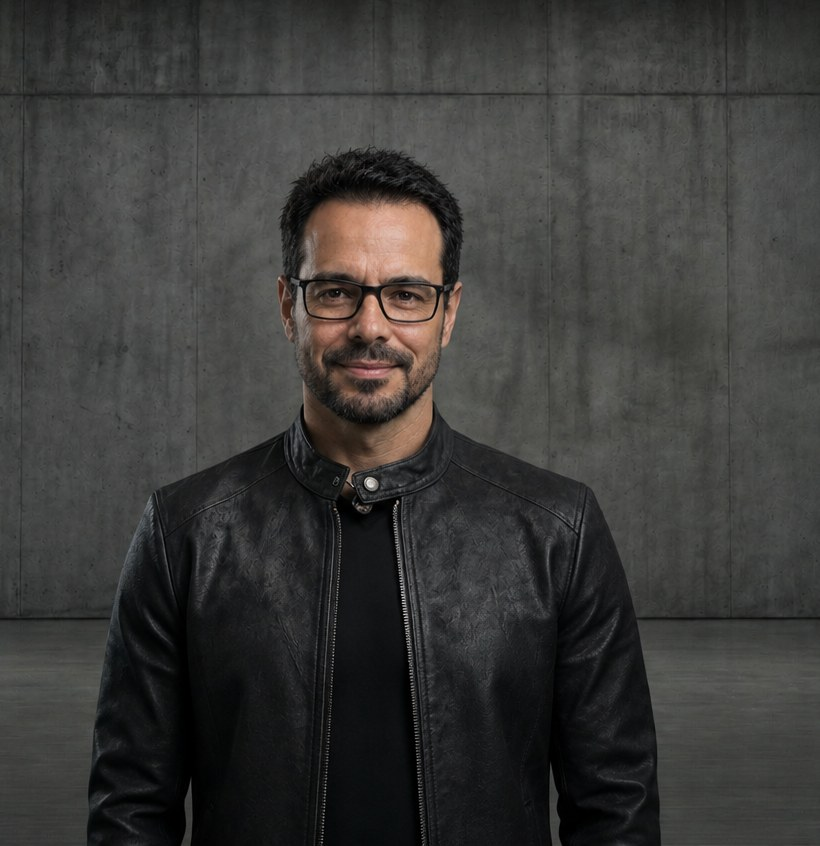
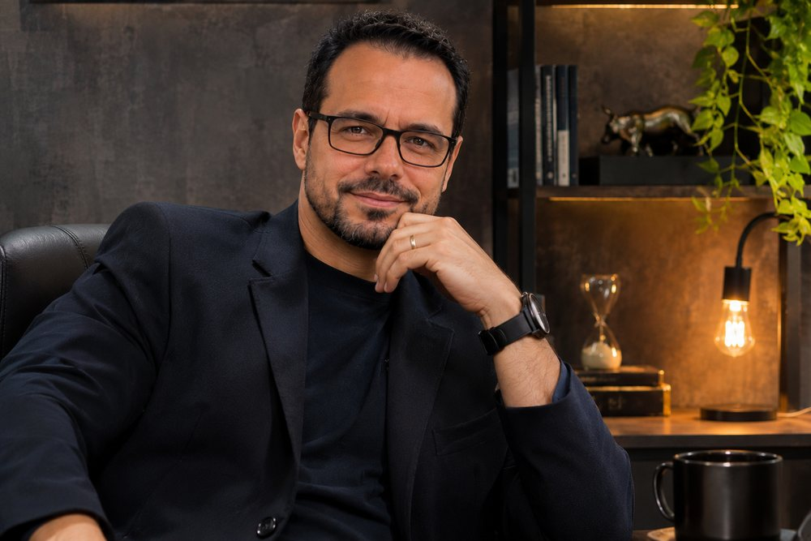

ARQON | A ORDEM
Formação e Inteligência Operacional
CLAREZA•ESTRUTURA•CONSTÂNCIA
Uma instituição dedicada à formação de operadores de marketplaces, com especialização em Amazon. Desenvolvemos conhecimento, raciocínio estratégico e maturidade operacional para transformar informação em decisões e negócios em operações mais estruturadas.
Não ensinamos apenas a vender. Formamos operadores capazes de compreender, administrar e evoluir seus negócios.

Uma nova perspectiva sobre a formação de operadores de marketplaces.
O comércio eletrônico abriu oportunidades extraordinárias para empreendedores, marcas e empresas. Entretanto, a facilidade de começar a vender não significa que seja igualmente simples construir uma operação rentável, organizada e sustentável.
À medida que um negócio cresce, aumenta também sua complexidade.
Publicidade, precificação, concorrência, estoque, capital de giro, logística, rentabilidade, comportamento do consumidor e desempenho comercial passam a exigir decisões cada vez mais conectadas.
É nesse cenário que nasce A ORDEM.
Uma instituição dedicada à formação de operadores de marketplaces, com especialização inicial na Amazon, fundamentada em três princípios:
Nossa proposta não é simplesmente ensinar pessoas a vender produtos pela internet.
É desenvolver profissionais capazes de compreender o funcionamento de uma operação, interpretar seus indicadores, reconhecer riscos, identificar oportunidades e tomar decisões fundamentadas.
Porque vender é uma atividade.
Operar com inteligência é uma competência.
Quem somos e por que existimos.
A ORDEM é uma instituição de educação, formação estratégica e desenvolvimento operacional voltada ao universo dos marketplaces.
Sua atuação integra conhecimentos técnicos, gestão empresarial, inteligência de mercado, análise de dados, planejamento financeiro e desenvolvimento de competências para a tomada de decisão.
Com foco inicial no ecossistema Amazon, a ORDEM foi concebida para atender pessoas em diferentes estágios de maturidade: desde quem está estruturando sua primeira operação até vendedores experientes que precisam reorganizar processos, recuperar rentabilidade ou preparar seus negócios para uma nova etapa de crescimento.
A instituição parte de uma premissa fundamental:
Uma operação não se torna sustentável apenas porque seu operador conhece as ferramentas disponíveis. Ela se fortalece quando ele compreende como suas decisões afetam o negócio como um todo.
Por isso, nossa formação ultrapassa a execução isolada de tarefas.
Ensinamos o operador a desenvolver raciocínio estratégico, disciplina operacional, capacidade analítica e visão sistêmica.
O objetivo é formar profissionais que saibam não apenas o que fazer, mas também por que fazer, quando agir, quais riscos considerar e como avaliar os resultados de suas decisões.
O mercado ensina a vender. A ORDEM se propõe a ensinar a operar.
Grande parte da educação disponível no comércio eletrônico concentra sua comunicação em técnicas de venda, oportunidades de produtos, campanhas publicitárias e estratégias de crescimento.
Esses conhecimentos são importantes, mas representam apenas parte da realidade de uma operação.
Um negócio pode aumentar seu faturamento enquanto perde rentabilidade.
Pode investir mais em publicidade sem compreender se está gerando retorno econômico.
Pode apresentar boas vendas e, simultaneamente, enfrentar riscos de ruptura de estoque, comprometimento de capital ou dependência excessiva de determinados produtos.
Pode acompanhar dezenas de indicadores diariamente e, ainda assim, não compreender as causas dos problemas que enfrenta.
O desafio não está necessariamente na ausência de informações.
Muitas vezes, está na dificuldade de interpretar o volume de informações disponíveis, compreender suas relações e transformá-las em decisões consistentes.
Essa condição produz o que chamamos de névoa operacional.
O operador acompanha resultados, consulta relatórios, ajusta campanhas e toma decisões, mas nem sempre consegue distinguir sintomas de causas, urgências de prioridades ou crescimento de deterioração.
A ORDEM existe para contribuir com a redução dessa névoa.
Por meio de educação estruturada, metodologia e desenvolvimento de competências, buscamos transformar informações fragmentadas em compreensão operacional.
Nosso compromisso é substituir improvisação por método, decisões isoladas por visão sistêmica e dependência de fórmulas por capacidade de análise.
Desenvolver operadores capazes de construir negócios que não dependam de ilusões para crescer.
O propósito da ORDEM é elevar o nível de formação e maturidade dos profissionais que atuam nos marketplaces.
Queremos contribuir para que vendedores deixem de atuar exclusivamente de maneira reativa e desenvolvam condições de administrar suas operações com maior consciência, previsibilidade e autonomia.
Isso significa formar pessoas capazes de:
- Compreender os fundamentos econômicos e operacionais de seus negócios.
- Interpretar dados e indicadores dentro do contexto real da operação.
- Reconhecer riscos antes que eles comprometam resultados.
- Planejar o uso do capital com responsabilidade.
- Integrar publicidade, estoque, precificação, catálogo e rentabilidade.
- Identificar oportunidades sem desconsiderar seus custos e consequências.
- Estabelecer prioridades e executar planos de maneira disciplinada.
- Desenvolver processos que permitam crescimento com maior controle.
- Aprender continuamente com resultados, erros e mudanças de mercado.
A ORDEM não pretende eliminar os riscos inerentes ao empreendedorismo.
Pretende preparar melhor os operadores para reconhecê-los, administrá-los e tomar decisões diante deles.
Não prometemos operações sem dificuldades. Desenvolvemos competências para enfrentá-las.
Missão
Desenvolver operadores de marketplaces por meio de formação estruturada, inteligência operacional e pensamento estratégico, contribuindo para decisões mais conscientes e negócios mais sustentáveis.
Visão
Tornar a ORDEM uma referência reconhecida em formação de alto nível para operadores de marketplaces, especialmente Amazon, pela profundidade do ensino, consistência metodológica e compromisso com a maturidade operacional.
Valores
Clareza
Compreender antes de agir.
Estrutura
Construir fundamentos antes de expandir.
Constância
Transformar aprendizado em evolução contínua.
Integridade
Comunicar possibilidades, riscos e limitações com transparência.
Responsabilidade
Reconhecer as consequências econômicas e operacionais das decisões.
Profundidade
Privilegiar compreensão e aplicação em vez de superficialidade.
Autonomia
Desenvolver profissionais capazes de pensar e decidir com independência.
Evolução
Manter abertura ao aprendizado, à revisão de métodos e às mudanças do mercado.
A ORDEM pretende construir sua reputação não por promessas de resultados financeiros, mas pela qualidade e consistência da formação oferecida.
Nossa responsabilidade é desenvolver conteúdos, experiências e metodologias que ajudem o operador a compreender melhor a realidade de seu negócio.
Reconhecemos que resultados comerciais dependem de inúmeros fatores, incluindo capital disponível, condições competitivas, capacidade de execução, características dos produtos e mudanças de mercado.
Por isso, não tratamos educação como garantia de desempenho.
Tratamos educação como desenvolvimento de capacidade.
O verdadeiro valor de uma formação está no conhecimento que permanece com o profissional, na qualidade das decisões que ele aprende a tomar e na autonomia que desenvolve ao longo do tempo.
Não queremos apenas transmitir respostas. Queremos formar pessoas capazes de formular perguntas melhores, investigar problemas e construir soluções.
Educação e tecnologia como capacidades complementares.
A ORDEM integra uma visão mais ampla de desenvolvimento de inteligência aplicada às operações digitais.
Essa visão reconhece que a complexidade dos marketplaces não pode ser enfrentada exclusivamente com esforço manual ou ferramentas desconectadas.
Ao mesmo tempo, reconhece que tecnologia sem compreensão pode ampliar a dependência do operador em vez de desenvolver sua autonomia.
Por isso, a formação humana permanece essencial.
A ORDEM concentra sua missão no desenvolvimento de conhecimento, raciocínio, critérios e maturidade operacional.
Dentro dessa visão também se encontra o ARCANUM, um sistema de inteligência operacional concebido para apoiar a interpretação de dados, a identificação de riscos e oportunidades e a construção de direcionamentos estratégicos para operações Amazon.
Os dois projetos possuem papéis complementares.
A ORDEM desenvolve a inteligência do operador.
O ARCANUM foi concebido para ampliar sua capacidade de análise operacional por meio da tecnologia.
Essa complementaridade não substitui o julgamento humano nem elimina a necessidade de validar informações e decisões.
Ela representa uma direção de desenvolvimento: aproximar educação de alto nível, inteligência aplicada e responsabilidade operacional.
A disponibilidade de funcionalidades, integrações e serviços tecnológicos dependerá de suas respectivas etapas de desenvolvimento e validação.
Clareza, estrutura e constância.
Esses três princípios representam a base da formação proposta pela ORDEM.
CLAREZA — Compreender antes de decidir
Clareza é a capacidade de enxergar a operação além dos números apresentados em uma tela.
É compreender o significado dos indicadores, reconhecer relações entre diferentes áreas do negócio e distinguir o que realmente exige atenção.
Um operador com clareza não observa apenas que suas vendas diminuíram.
Ele investiga o que pode ter provocado essa mudança.
Não interpreta uma campanha publicitária apenas por seu volume de vendas.
Avalia custos, conversão, margem, contexto competitivo e impacto econômico.
A clareza transforma informação em entendimento.
Sem clareza, decisões se tornam reações.
ESTRUTURA — Construir fundamentos para sustentar o crescimento
Estrutura significa organizar processos, recursos, responsabilidades e decisões.
Uma operação estruturada não depende exclusivamente da memória, da intuição ou da disponibilidade constante de seu responsável.
Ela possui critérios, rotinas, indicadores, mecanismos de acompanhamento e procedimentos que tornam a gestão mais consistente.
Na ORDEM, estrutura não significa burocracia.
Significa criar condições para que o operador saiba onde está, quais recursos possui, o que precisa fazer e como avaliar sua evolução.
Sem estrutura, o crescimento pode ampliar fragilidades que já existiam.
CONSTÂNCIA — Evoluir por meio de disciplina e aprendizado
Constância não é repetir indefinidamente as mesmas ações.
É manter disciplina para observar, interpretar, executar, avaliar e corrigir.
Os marketplaces são ambientes dinâmicos.
Concorrentes mudam estratégias. Custos variam. O comportamento dos consumidores evolui. Plataformas alteram regras, ferramentas e mecanismos de funcionamento.
Por isso, uma operação saudável exige aprendizado contínuo.
Constância é a capacidade de sustentar um processo de evolução mesmo diante de mudanças e dificuldades.
Sem constância, conhecimento não se transforma em maturidade.
Formação de alto nível exige profundidade, aplicação e pensamento crítico.
A ORDEM foi concebida para desenvolver uma experiência educacional que ultrapasse a simples transmissão de informações.
Nosso modelo de formação busca integrar cinco dimensões fundamentais.
Conhecimento técnico
Compreensão das ferramentas, funcionalidades, regras e mecanismos operacionais dos marketplaces.
Inteligência analítica
Capacidade de interpretar relatórios, indicadores, tendências e relações entre diferentes variáveis do negócio.
Raciocínio estratégico
Desenvolvimento de critérios para estabelecer prioridades, comparar alternativas e compreender as consequências das decisões.
Aplicação operacional
Transformação do conhecimento em processos, rotinas, planos de ação e práticas verificáveis.
Evolução profissional
Desenvolvimento progressivo de autonomia, responsabilidade, disciplina e maturidade na condução da operação.
Nosso objetivo não é formar profissionais que apenas reproduzam procedimentos.
É formar operadores capazes de compreender problemas novos e construir respostas fundamentadas.
Acreditamos que o ensino de alto nível não se define pela complexidade da linguagem ou pela quantidade de conteúdo oferecido.
Ele se define pela profundidade da compreensão, pela qualidade da aplicação e pela capacidade de desenvolver competências duradouras.
Existe uma diferença entre vender em um marketplace e administrar uma operação.
O vendedor concentra sua atenção na comercialização de produtos.
O operador compreende que cada venda faz parte de um sistema econômico e operacional mais amplo.
Ele precisa considerar não apenas o volume vendido, mas também os recursos utilizados para produzir aquele resultado.
Precisa compreender como publicidade, conversão, margem, estoque, logística, capital e concorrência se influenciam.
Precisa reconhecer que decisões aparentemente positivas em uma área podem produzir consequências negativas em outra.
Um operador preparado desenvolve condições de responder perguntas essenciais:
- Minha operação está realmente gerando valor?
- Quais produtos sustentam minha rentabilidade?
- Onde estou comprometendo capital sem retorno adequado?
- Quais problemas são sintomas e quais podem representar causas?
- O que precisa ser protegido, corrigido, testado ou expandido?
- Quais decisões exigem atenção imediata?
- Minha estrutura atual suporta uma nova etapa de crescimento?
Essa capacidade de interpretação é o que diferencia o acompanhamento de indicadores da gestão efetiva de uma operação.
A ORDEM forma operadores porque acredita que o futuro dos marketplaces exigirá mais do que habilidade para vender. Exigirá capacidade para administrar complexidade.
Não ensinamos apenas ferramentas. Desenvolvemos capacidade de decisão.
O diferencial que a ORDEM pretende construir está na integração entre conhecimento técnico, experiência operacional, inteligência analítica e desenvolvimento de maturidade.
Nossa abordagem se fundamenta em princípios claros.
Visão sistêmica
Compreender a operação como um conjunto de variáveis conectadas.
Causalidade
Investigar relações e possíveis causas, sem confundir correlação com explicação comprovada.
Aplicação prática
Conectar conceitos a problemas e decisões encontrados no cotidiano dos marketplaces.
Responsabilidade econômica
Considerar custos, capital, rentabilidade e riscos em cada etapa do crescimento.
Pensamento crítico
Desenvolver autonomia para questionar recomendações e avaliar alternativas.
Evolução contínua
Compreender que a formação de um operador não termina com o domínio de uma ferramenta.
Não acreditamos que a qualidade da educação deva ser medida por promessas extraordinárias.
Acreditamos que ela deve ser demonstrada pela consistência da metodologia, pela profundidade do conteúdo e pela capacidade de desenvolver competências aplicáveis.
A ORDEM não pretende criar dependência de respostas prontas. Pretende desenvolver autonomia para tomar decisões melhores.
Nossa especialização: Amazon.
Formação aprofundada para um dos ecossistemas mais exigentes do comércio eletrônico.
A Amazon reúne oportunidades relevantes para empreendedores e empresas, mas também apresenta desafios operacionais que exigem conhecimento especializado.
A gestão de uma conta envolve múltiplas dimensões que precisam funcionar de maneira coordenada.
Entre os principais campos de formação da ORDEM estão:
Fundamentos e arquitetura da operação Amazon
Compreensão do ecossistema, modelos de operação, organização de contas, políticas, responsabilidades e fundamentos da atividade comercial.
Catálogo, listings e apresentação de produtos
Estruturação de anúncios, qualidade das informações, atributos, imagens, conteúdo comercial e elementos que influenciam a experiência de compra.
Publicidade e Amazon Ads
Planejamento publicitário, campanhas, segmentações, interpretação de métricas, eficiência dos investimentos e relação entre publicidade e resultado econômico.
Rentabilidade e gestão financeira
Análise de custos, taxas, margens, fluxo de caixa, capital de giro, ponto de equilíbrio e viabilidade econômica dos produtos.
Estoque, logística e disponibilidade
Planejamento de reposição, controle de cobertura, prevenção de rupturas, análise de imobilização de capital e avaliação das alternativas logísticas.
Inteligência competitiva e precificação
Leitura de mercado, posicionamento competitivo, análise de preços, diferenciação e compreensão dos fatores que influenciam a competitividade.
Diagnóstico e gestão de desempenho
Interpretação integrada de indicadores, identificação de riscos, análise de causas e estabelecimento de prioridades operacionais.
Planejamento e evolução da operação
Desenvolvimento de processos, rotinas de acompanhamento, planos de melhoria e preparação para diferentes estágios de crescimento.
Nossa abordagem considera que esses conhecimentos não devem ser tratados como disciplinas completamente independentes.
A publicidade influencia a rentabilidade. A disponibilidade de estoque afeta as vendas. A precificação altera a competitividade. E cada decisão pode modificar o equilíbrio do negócio.
Formar um operador Amazon significa prepará-lo para compreender essas relações.
Uma jornada de maturidade operacional.
Cada operação possui um estágio. Cada estágio exige decisões diferentes.
A ORDEM reconhece que não existe uma estratégia universal adequada para todos os vendedores.
Um profissional que está validando seus primeiros produtos enfrenta desafios diferentes daqueles encontrados por uma operação consolidada.
Da mesma forma, uma empresa que busca recuperar rentabilidade possui prioridades distintas de outra que pretende expandir seu catálogo ou desenvolver uma marca própria.
Por isso, nossa visão educacional considera diferentes estágios de evolução:
Compreender fundamentos, testar hipóteses e avaliar viabilidade.
Desenvolver processos, controlar riscos e buscar consistência operacional.
Ampliar resultados respeitando limites financeiros, logísticos e estruturais.
Desenvolver novas oportunidades, produtos e capacidades operacionais.
Aprofundar diferenciação, posicionamento, identidade e gestão de portfólio.
Fortalecer competitividade, reputação e proteção dos ativos comerciais.
Reduzir dependências e avaliar novas frentes de crescimento.
Preparar capacidades e conhecimentos necessários para avaliar operações em outros mercados.
Esses estágios não representam uma sequência obrigatória ou uma promessa de evolução automática.
São referências para compreender necessidades, competências e prioridades.
O ensino precisa respeitar o momento real do operador, não apenas suas ambições de crescimento.
Para quem é a ORDEM
A ORDEM foi concebida para pessoas que desejam desenvolver uma relação mais profissional e estruturada com o comércio eletrônico.
Para quem está começando
E deseja construir fundamentos sólidos antes de comprometer recursos em decisões que ainda não compreende.
Para quem já vende, mas enfrenta dificuldades
E precisa melhorar sua capacidade de diagnóstico, organização, planejamento e gestão.
Para operadores em crescimento
Que precisam desenvolver processos, controlar capital, interpretar indicadores e preparar sua estrutura para novas responsabilidades.
Para profissionais e gestores de e-commerce
Que desejam aprofundar conhecimentos técnicos e estratégicos sobre marketplaces, especialmente Amazon.
Para empreendedores que buscam maturidade
E compreendem que crescimento sustentável exige mais do que encontrar produtos ou aumentar investimentos publicitários.
A ORDEM não foi concebida para quem procura garantias de faturamento, resultados imediatos ou fórmulas que dispensem estudo e execução.
Nossa proposta é direcionada a quem reconhece o valor do conhecimento, da disciplina e do desenvolvimento contínuo.
Mr. V, Arquiteto da Operação.
A experiência por trás da visão.

A ORDEM nasce da trajetória de seu fundador, conhecido como Mr. V.
Sua experiência profissional começou muito antes do comércio eletrônico, em uma carreira ligada à indústria do petróleo, com atuação nas maiores companhias petrolíferas do mundo, formação internacional nos Estados Unidos, Inglaterra e Canadá e vivências profissionais em diferentes países.
Posteriormente, decidiu explorar novos caminhos no empreendedorismo digital.
Passou pelo marketing digital, dropshipping e Mercado Livre, até direcionar sua atuação ao ecossistema Amazon.
Ao longo de mais de cinco anos de experiências no ambiente digital, desenvolveu uma compreensão prática dos desafios enfrentados por quem constrói e administra negócios em marketplaces.
Sua trajetória reúne experiências profissionais, aprendizado técnico, decisões empreendedoras, conquistas e dificuldades operacionais.
Foi dessa combinação que surgiu uma convicção:
O conhecimento necessário para construir uma operação sustentável vai muito além das técnicas utilizadas para gerar vendas.
A identidade do Arquiteto da Operação representa essa maneira de compreender os negócios: observar estruturas, reconhecer relações, identificar fragilidades e desenvolver caminhos de evolução.
O Mr. V não representa uma promessa de sucesso sem dificuldades.
Representa o compromisso de compartilhar conhecimento, experiência e uma visão operacional construída a partir da realidade.
Sua filosofia pode ser resumida em uma declaração:
“Eu não vendo ilusões. Eu revelo o caminho para operações que não quebram.”
Essa frase expressa um compromisso com o ensino responsável, a transparência e a preparação de operadores para enfrentar os desafios reais do mercado.
O mercado não precisa de mais promessas. Precisa de operadores preparados.
Existe uma diferença entre começar a vender e aprender a administrar um negócio.
Entre acompanhar números e compreender o que eles significam.
Entre executar tarefas e tomar decisões.
Entre crescer e construir condições para sustentar o crescimento.
O comércio eletrônico oferece oportunidades, mas não elimina a complexidade de empreender.
Por trás de cada produto existem custos.
Por trás de cada campanha existem investimentos.
Por trás de cada decisão existem consequências.
E por trás de uma operação sustentável precisa existir alguém preparado para compreender tudo isso.
Acreditamos no conhecimento que desenvolve autonomia.
Na disciplina que transforma intenção em execução.
Na inteligência que conecta informações e revela prioridades.
Na estrutura que permite crescer com responsabilidade.
Não acreditamos em atalhos universais.
Não confundimos faturamento com sucesso.
Não transformamos exceções em promessas.
E não reduzimos a formação de um operador a uma sequência de ferramentas e técnicas.
Acreditamos que negócios mais sólidos começam com profissionais mais preparados.
Que a clareza antecede a decisão.
Que a estrutura sustenta a evolução.
E que a constância transforma aprendizado em maturidade.
A ORDEM não existe apenas para ensinar a vender.
Existe para formar quem compreende o que está construindo.
CLAREZA•ESTRUTURA•CONSTÂNCIA
Sua próxima evolução começa aqui.
Se você deseja ultrapassar o aprendizado de técnicas isoladas e desenvolver uma visão mais completa sobre a gestão de marketplaces, conheça a proposta da ORDEM.
Uma formação orientada por fundamentos, inteligência operacional, aplicação prática e desenvolvimento contínuo.
Porque o objetivo não é apenas vender mais.
É aprender a construir, administrar e evoluir com consciência.